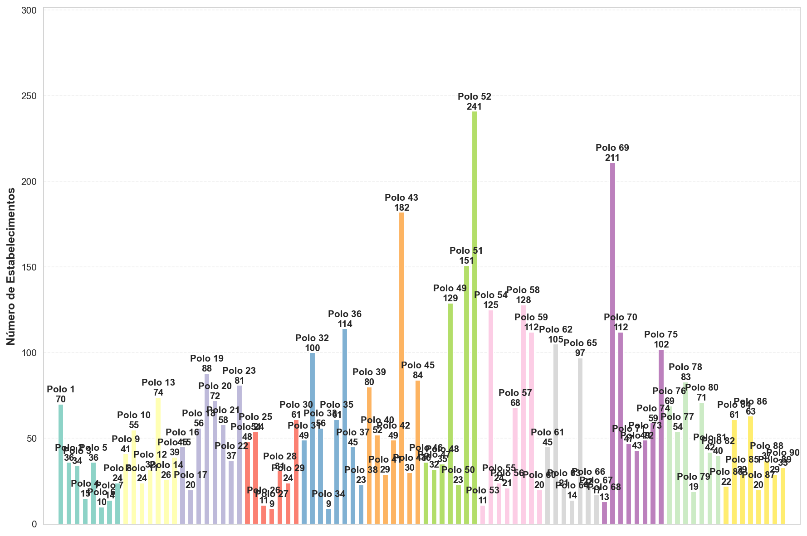
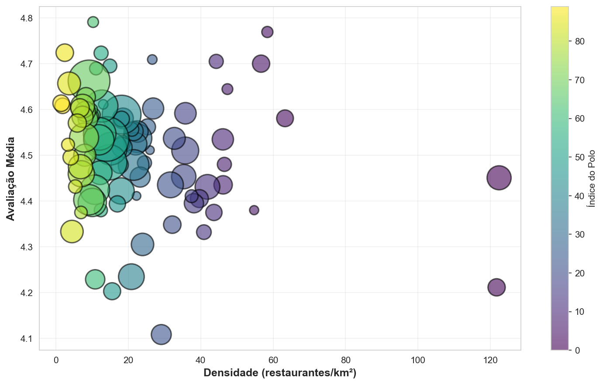
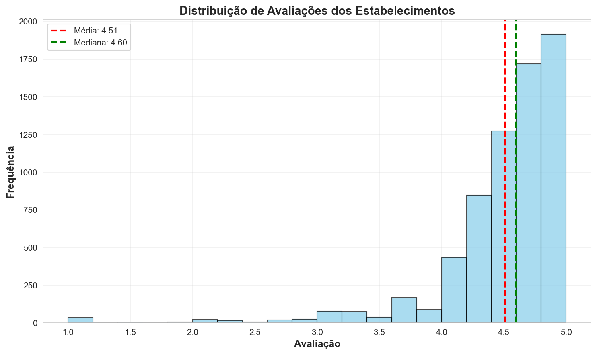
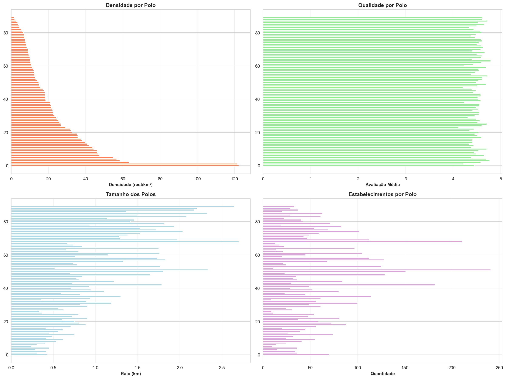
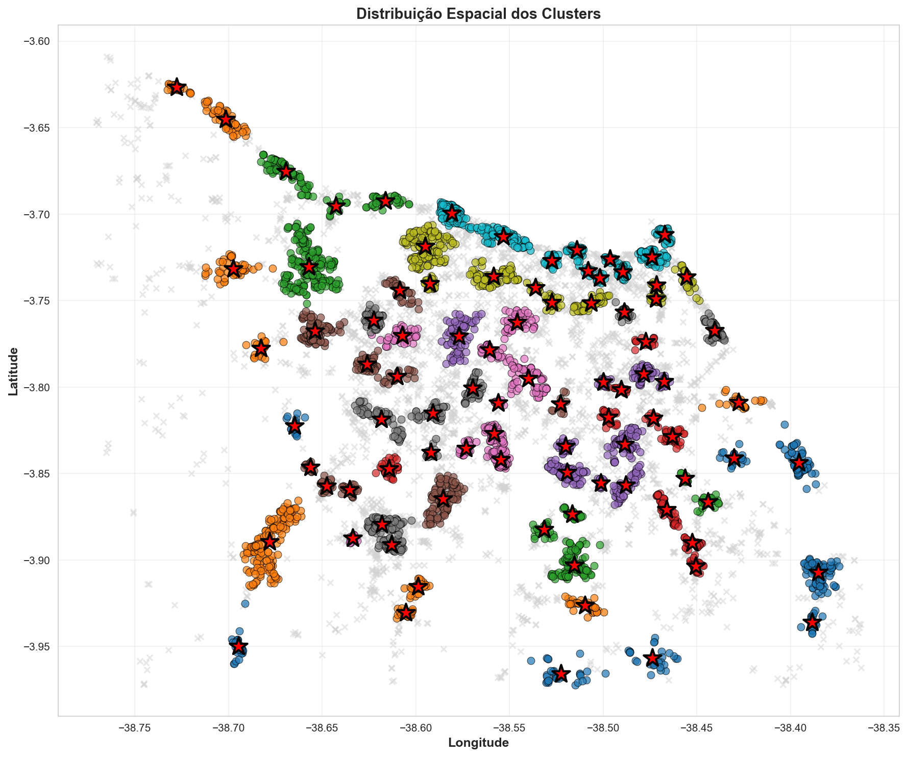
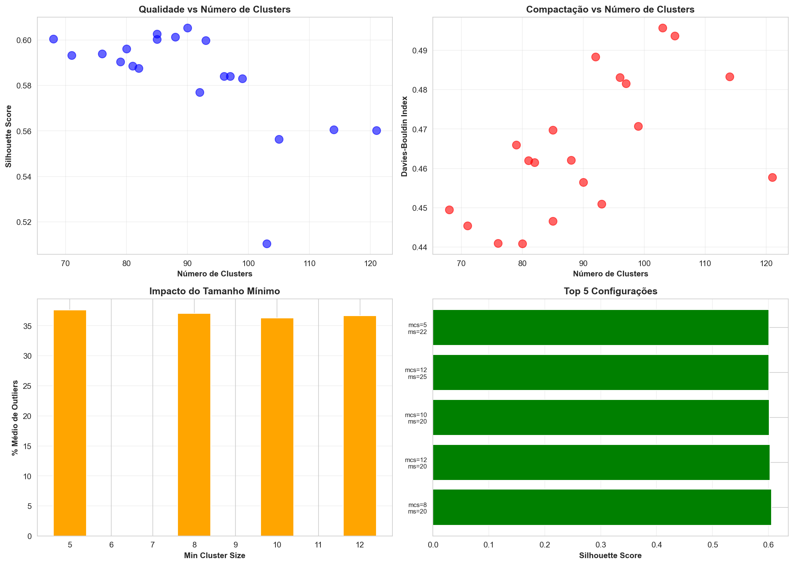

📊 Métricas Principais
🎯 Qualidade do Clustering
Métricas de Validação
Silhouette Score: 0.605
Indica quão bem separados estão os clusters. Valores próximos de 1 são ideais.
Davies-Bouldin Index: 0.457
Mede a compactação dos clusters. Valores menores são melhores.
Calinski-Harabasz Score: 13845.7
Razão entre dispersão inter e intra-cluster. Valores maiores são melhores.
🎯 Detalhes dos Polos Gastronômicos
| Polo | Estabelecimentos | Densidade (rest/km²) | Raio (km) | Avaliação Média | Qualidade |
|---|---|---|---|---|---|
| Polo 1 | 70 | 122.4 | 0.43 | 4.45 ⭐ | 4.45 |
| Polo 2 | 36 | 121.7 | 0.31 | 4.21 ⭐ | 4.21 |
| Polo 3 | 34 | 63.3 | 0.41 | 4.58 ⭐ | 4.58 |
| Polo 4 | 15 | 58.4 | 0.29 | 4.77 ⭐ | 4.77 |
| Polo 5 | 36 | 56.7 | 0.45 | 4.70 ⭐ | 4.70 |
| Polo 6 | 10 | 54.8 | 0.24 | 4.38 ⭐ | 4.38 |
| Polo 7 | 14 | 47.4 | 0.31 | 4.64 ⭐ | 4.64 |
| Polo 8 | 24 | 46.5 | 0.41 | 4.48 ⭐ | 4.48 |
| Polo 9 | 41 | 46.2 | 0.53 | 4.44 ⭐ | 4.44 |
| Polo 10 | 55 | 46.1 | 0.62 | 4.53 ⭐ | 4.53 |
| Polo 11 | 24 | 44.3 | 0.42 | 4.71 ⭐ | 4.71 |
| Polo 12 | 32 | 43.7 | 0.48 | 4.38 ⭐ | 4.38 |
| Polo 13 | 74 | 41.9 | 0.75 | 4.43 ⭐ | 4.43 |
| Polo 14 | 26 | 40.9 | 0.45 | 4.33 ⭐ | 4.33 |
| Polo 15 | 39 | 39.6 | 0.56 | 4.41 ⭐ | 4.41 |
| Polo 16 | 45 | 38.1 | 0.61 | 4.40 ⭐ | 4.40 |
| Polo 17 | 20 | 37.5 | 0.41 | 4.41 ⭐ | 4.41 |
| Polo 18 | 56 | 35.8 | 0.71 | 4.59 ⭐ | 4.59 |
| Polo 19 | 88 | 35.7 | 0.89 | 4.51 ⭐ | 4.51 |
| Polo 20 | 72 | 35.3 | 0.81 | 4.45 ⭐ | 4.45 |
| Polo 21 | 58 | 32.7 | 0.75 | 4.54 ⭐ | 4.54 |
| Polo 22 | 37 | 32.2 | 0.61 | 4.35 ⭐ | 4.35 |
| Polo 23 | 81 | 31.7 | 0.90 | 4.44 ⭐ | 4.44 |
| Polo 24 | 48 | 29.1 | 0.72 | 4.11 ⭐ | 4.11 |
| Polo 25 | 54 | 26.9 | 0.80 | 4.60 ⭐ | 4.60 |
| Polo 26 | 11 | 26.6 | 0.36 | 4.71 ⭐ | 4.71 |
| Polo 27 | 9 | 26.0 | 0.33 | 4.51 ⭐ | 4.51 |
| Polo 28 | 31 | 25.3 | 0.62 | 4.56 ⭐ | 4.56 |
| Polo 29 | 24 | 24.5 | 0.56 | 4.48 ⭐ | 4.48 |
| Polo 30 | 61 | 24.0 | 0.90 | 4.31 ⭐ | 4.31 |
| Polo 31 | 49 | 23.3 | 0.82 | 4.45 ⭐ | 4.45 |
| Polo 32 | 100 | 22.6 | 1.19 | 4.54 ⭐ | 4.54 |
| Polo 33 | 56 | 22.5 | 0.89 | 4.55 ⭐ | 4.55 |
| Polo 34 | 9 | 22.3 | 0.36 | 4.41 ⭐ | 4.41 |
| Polo 35 | 61 | 22.1 | 0.94 | 4.52 ⭐ | 4.52 |
| Polo 36 | 114 | 21.5 | 1.30 | 4.48 ⭐ | 4.48 |
| Polo 37 | 45 | 21.5 | 0.82 | 4.55 ⭐ | 4.55 |
| Polo 38 | 23 | 21.0 | 0.59 | 4.56 ⭐ | 4.56 |
| Polo 39 | 80 | 20.9 | 1.10 | 4.23 ⭐ | 4.23 |
| Polo 40 | 52 | 18.6 | 0.94 | 4.58 ⭐ | 4.58 |
| Polo 41 | 29 | 18.4 | 0.71 | 4.53 ⭐ | 4.53 |
| Polo 42 | 49 | 18.3 | 0.92 | 4.52 ⭐ | 4.52 |
| Polo 43 | 182 | 18.2 | 1.78 | 4.59 ⭐ | 4.59 |
| Polo 44 | 30 | 18.2 | 0.72 | 4.58 ⭐ | 4.58 |
| Polo 45 | 84 | 18.0 | 1.22 | 4.42 ⭐ | 4.42 |
| Polo 46 | 36 | 17.6 | 0.81 | 4.48 ⭐ | 4.48 |
| Polo 47 | 32 | 17.0 | 0.77 | 4.39 ⭐ | 4.39 |
| Polo 48 | 35 | 15.6 | 0.85 | 4.20 ⭐ | 4.20 |
| Polo 49 | 129 | 15.2 | 1.65 | 4.51 ⭐ | 4.51 |
| Polo 50 | 23 | 15.0 | 0.70 | 4.70 ⭐ | 4.70 |
| Polo 51 | 151 | 14.8 | 1.80 | 4.48 ⭐ | 4.48 |
| Polo 52 | 241 | 14.0 | 2.34 | 4.54 ⭐ | 4.54 |
| Polo 53 | 11 | 13.1 | 0.52 | 4.61 ⭐ | 4.61 |
| Polo 54 | 125 | 12.7 | 1.77 | 4.61 ⭐ | 4.61 |
| Polo 55 | 24 | 12.5 | 0.78 | 4.72 ⭐ | 4.72 |
| Polo 56 | 21 | 12.5 | 0.73 | 4.38 ⭐ | 4.38 |
| Polo 57 | 68 | 12.3 | 1.33 | 4.46 ⭐ | 4.46 |
| Polo 58 | 128 | 12.1 | 1.83 | 4.55 ⭐ | 4.55 |
| Polo 59 | 112 | 11.9 | 1.73 | 4.53 ⭐ | 4.53 |
| Polo 60 | 20 | 11.1 | 0.76 | 4.69 ⭐ | 4.69 |
| Polo 61 | 45 | 10.9 | 1.15 | 4.23 ⭐ | 4.23 |
| Polo 62 | 105 | 10.8 | 1.76 | 4.42 ⭐ | 4.42 |
| Polo 63 | 21 | 10.5 | 0.80 | 4.59 ⭐ | 4.59 |
| Polo 64 | 14 | 10.3 | 0.66 | 4.79 ⭐ | 4.79 |
| Polo 65 | 97 | 10.1 | 1.75 | 4.40 ⭐ | 4.40 |
| Polo 66 | 22 | 10.0 | 0.84 | 4.58 ⭐ | 4.58 |
| Polo 67 | 17 | 9.9 | 0.74 | 4.60 ⭐ | 4.60 |
| Polo 68 | 13 | 9.4 | 0.66 | 4.50 ⭐ | 4.50 |
| Polo 69 | 211 | 9.2 | 2.70 | 4.66 ⭐ | 4.66 |
| Polo 70 | 112 | 9.2 | 1.97 | 4.40 ⭐ | 4.40 |
| Polo 71 | 47 | 8.9 | 1.30 | 4.58 ⭐ | 4.58 |
| Polo 72 | 43 | 8.4 | 1.28 | 4.63 ⭐ | 4.63 |
| Polo 73 | 49 | 8.2 | 1.38 | 4.60 ⭐ | 4.60 |
| Polo 74 | 59 | 8.0 | 1.53 | 4.50 ⭐ | 4.50 |
| Polo 75 | 102 | 7.8 | 2.04 | 4.54 ⭐ | 4.54 |
| Polo 76 | 69 | 7.4 | 1.72 | 4.61 ⭐ | 4.61 |
| Polo 77 | 54 | 7.4 | 1.53 | 4.58 ⭐ | 4.58 |
| Polo 78 | 83 | 7.1 | 1.93 | 4.46 ⭐ | 4.46 |
| Polo 79 | 19 | 7.0 | 0.93 | 4.38 ⭐ | 4.38 |
| Polo 80 | 71 | 6.8 | 1.82 | 4.48 ⭐ | 4.48 |
| Polo 81 | 42 | 6.7 | 1.41 | 4.60 ⭐ | 4.60 |
| Polo 82 | 40 | 6.0 | 1.46 | 4.57 ⭐ | 4.57 |
| Polo 83 | 22 | 5.4 | 1.14 | 4.43 ⭐ | 4.43 |
| Polo 84 | 61 | 4.5 | 2.08 | 4.33 ⭐ | 4.33 |
| Polo 85 | 29 | 4.1 | 1.49 | 4.50 ⭐ | 4.50 |
| Polo 86 | 63 | 3.7 | 2.33 | 4.66 ⭐ | 4.66 |
| Polo 87 | 20 | 3.4 | 1.37 | 4.52 ⭐ | 4.52 |
| Polo 88 | 37 | 2.5 | 2.17 | 4.72 ⭐ | 4.72 |
| Polo 89 | 29 | 1.9 | 2.20 | 4.61 ⭐ | 4.61 |
| Polo 90 | 33 | 1.5 | 2.65 | 4.61 ⭐ | 4.61 |
📈 Visualizações
Distribuição de Estabelecimentos por Polo
Densidade vs Qualidade
Distribuição de Avaliações
Comparação de Métricas
Distribuição Espacial
Análise de Parâmetros
💡 Recomendações e Insights
🎯 Polos Principais
1. Polo 1: 70 estabelecimentos com densidade de 122.4 rest/km²
2. Polo 2: 36 estabelecimentos com densidade de 121.7 rest/km²
3. Polo 3: 34 estabelecimentos com densidade de 63.3 rest/km²
⭐ Melhor Qualidade
1. Polo 64: Avaliação média de 4.79 ⭐
2. Polo 4: Avaliação média de 4.77 ⭐
3. Polo 88: Avaliação média de 4.72 ⭐
🔸 Estabelecimentos Isolados
Foram identificados 2935 estabelecimentos isolados (37.1% do total).
Estes estabelecimentos não fazem parte de nenhum polo gastronômico identificado e podem representar oportunidades de desenvolvimento comercial.
🔬 Metodologia
Algoritmo HDBSCAN
HDBSCAN (Hierarchical Density-Based Spatial Clustering of Applications with Noise) é um algoritmo de clustering baseado em densidade que identifica automaticamente o número de clusters.
Parâmetros utilizados:
- min_cluster_size: 8 (tamanho mínimo do cluster)
- min_samples: 20 (amostras mínimas para densidade)
- metric: haversine (distância geográfica real - resultados em km)
Fonte dos dados: Google Places API (New)
Área de busca: Fortaleza, CE (Grid 20x20)